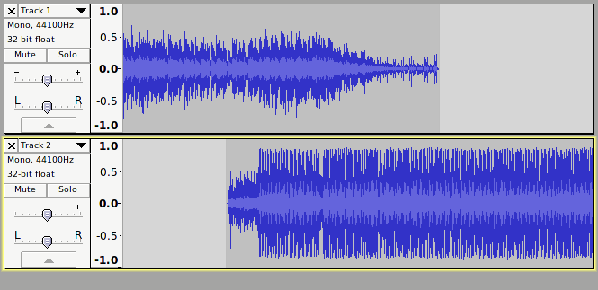
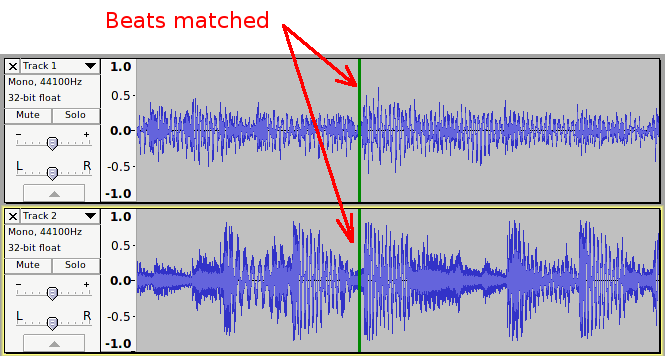
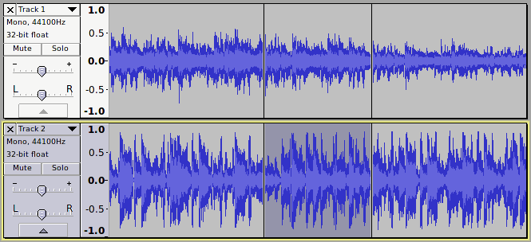
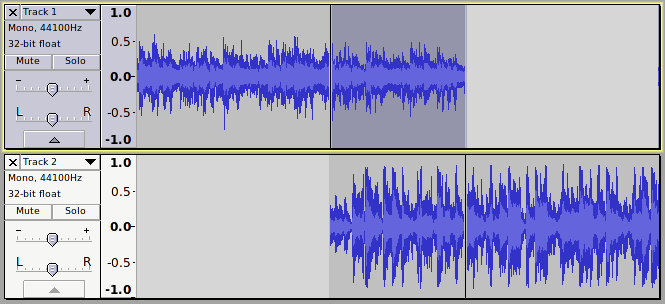
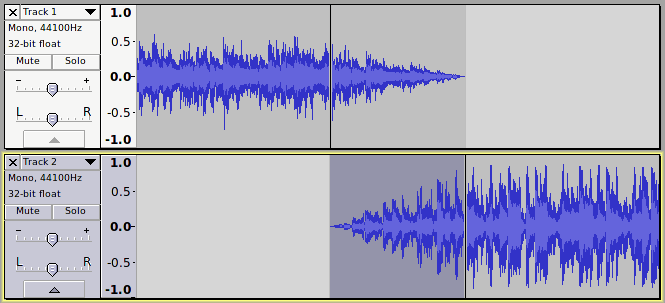

Creating a Crossfade
From Audacity Manual
How to crossfade two tracks
First, the tracks should be imported or recorded. By default, importing two audio files will create two audio tracks one above the other. Similarly, recording a new track will by default create a new track below any other tracks in the project. This is the arrangement that we want as the starting point (for clarity the illustrations show mono tracks, but the procedure is exactly the same for stereo tracks).
Roughly position the tracks
Drag the second track to roughly the right place using the Time Shift tool . Don't worry about getting the position too precise at this stage as we will adjust the position later. For crossfading two music tracks, an overlap of around 5 seconds is usually suitable, though sometimes a much shorter, or longer crossfade may sound better. How long the crossfade transition lasts is largely a matter of personal taste.
- 
Align tracks more precisely
Tracks will often begin and end with a short period of silence. Leading/trailing silence may be removed by selecting and deleting. Audacity's Cut Preview can be useful to check that the selection to be deleted is correct.
The end of the first track will be the point at which the first track finally stops (has faded to silence). The start of the second track will be the point at which the second track starts to fade in.
- 
After selecting the region to be crossfaded, create a split at both ends of the selection using CTRL + I. The split marks will greatly facilitate selecting the appropriate areas in each track.
- 
Trim the tracks
If, as in the images above, it is necessary to trim the tracks further, select the unwanted region after the fade out (in the upper track in this case) by double-clicking in it, then delete it.
- 
Apply fades
The quickest way to apply the fades is with the Crossfade Tracks effect. This effect applies a fade-out to the upper selected track, and a fade-in to the lower of the two tracks. For more complex fading, the Adjustable Fade effect may be applied to each of the tracks in turn, applying a fade-out to the overlapping section in the first track, and a fade-in to the overlapping section of the second track.
- 
- For rhythmic music with closely matched tempo this will often be undesirable and may be prevented by using fade shapes that bow up higher than a linear fade (such as the Equal Power fade shape).
- For crossfading music where there is a substantial difference in tempo, a smoother sounding crossfade may be achieved by allowing the volume to drop by the use of fade shapes that dip lower than a linear fade.